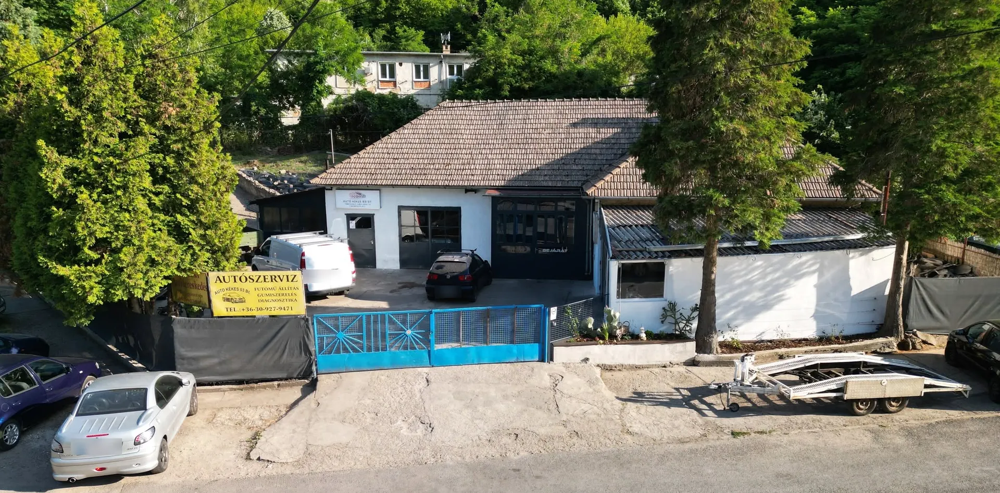
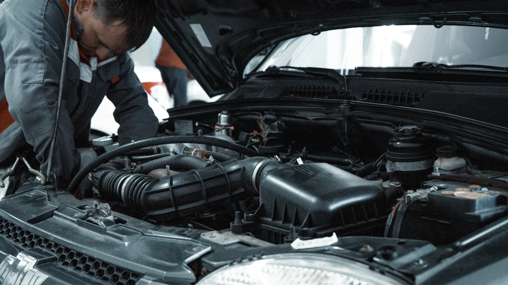
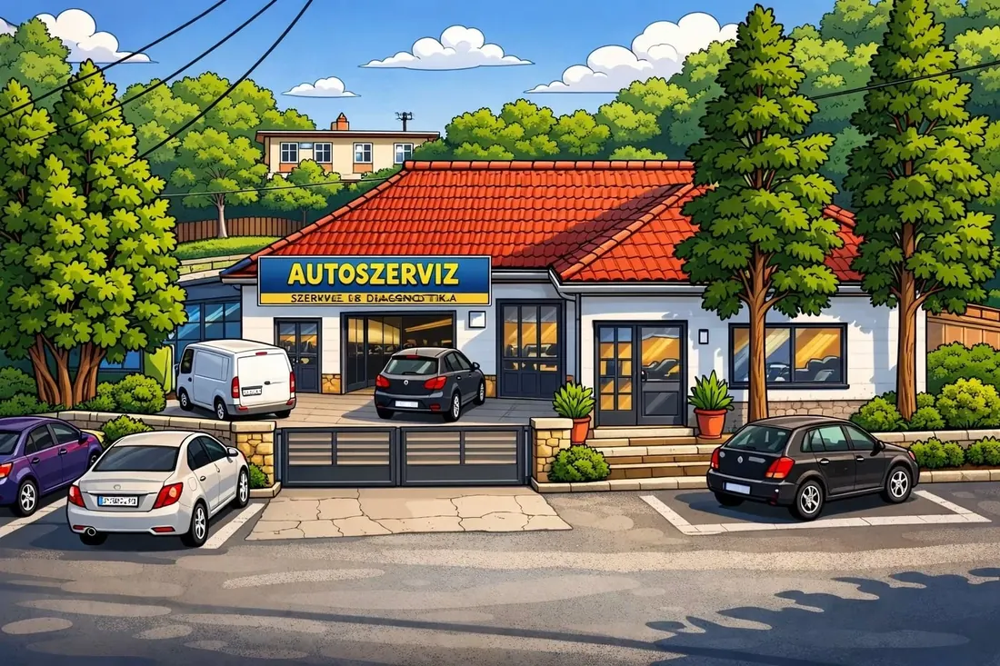

Szervizelés, karbantartás
Gépjárművek szervizelése és időszakos karbantartása, márkafüggetlenül.

Szervizelés és időszakos karbantartás, autóvillamossági javítások, korszerű diagnosztikai eszközökkel végzett hibafeltárás – és a gumicsere is, egy helyen.
Személyautót, kisteherautót és motorkerékpárt is fogadunk, márkától függetlenül. A javítás mellett az autóval járó papírmunkát is elintézzük.
Gépjárművek szervizelése és időszakos karbantartása, márkafüggetlenül.
Hibafeltárás korszerű diagnosztikai eszközökkel, autóvillamossági javítások.
Computeres, 4 fejes futóműállítás, vezeték nélküli Bluetooth-kapcsolattal.
Személyautóra, kisteherautóra és motorkerékpárra is, defektjavítással.
Koccanás, horpadás után a karosszéria javítását is vállaljuk.
Autók és motorkerékpárok felkészítése a műszaki vizsgára, valamint vizsgáztatása.
Válassza ki a járművét és a felnit, és megmutatjuk a pontos árat a 2026-os árlistánk alapján – telefonálás nélkül.
Bruttó árak, a 2026. januári árlistánk szerint. A gumiabroncs ára nincs benne.
Áraink 2026-ban sem változtak. A megszokott minőség és korrekt árak várják továbbra is.
Az árak forintban értendők, és tartalmazzák az áfát.

„Megfordultam pár autószervizben, Komlón szerintem ők a legjobbak, írom ezt több szervizelés után. Ajánlom őket.”
Google-vélemény, egy hónapja
„Nagyon korrekt szerviz, mindig kedvesek és segítőkészek!”
Google-vélemény
Írja meg, mire van szüksége, és visszahívjuk egy időponttal. Ha gyorsabb, hívjon:
06 30 927 9471Ha nem találja a választ, hívjon: 06 30 927 9471
Gumicsere centrírozással, le- és felszereléssel, 4 kerékre: 16 colos lemezfelnis személyautónál 16 000 Ft, 16 colos alufelninél 20 000 Ft, 17 colostól és kisteherautónál 24 000 Ft. Az árak bruttó árak, a 2026-os árlista szerint.
A szerviz óradíja 15 000 Ft, a járműdiagnosztika 8 000 Ft-tól, a fényszóró-állítás 6 000 Ft. Az árak tartalmazzák az áfát.
Nem. Márkafüggetlen autószerviz vagyunk: személyautót, kisteherautót és motorkerékpárt is fogadunk.
Igen. Külföldi gépkocsik és motorkerékpárok honosítását, forgalomba helyezését ügyintézéssel együtt vállaljuk, ahogy az átírást, az eredetvizsgán való bemutatást és a teljes körű okmányirodai ügyintézést is.
Hétfőtől péntekig 8 és 17 óra között, szombaton 8 és 13 óra között. Időpontot a 06 30 927 9471-es számon lehet kérni.
